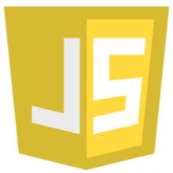
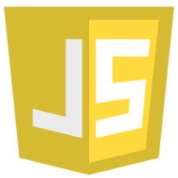
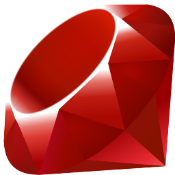
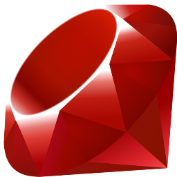

Julio López Montalvo
Especialista y Consultor Web. CEO de Codalot, fundada para acercar el aprendizaje web. Ha dictado charlas y talleres en numerosos eventos de comunidades del país. Desarrollador Fullstack Web. Ha trabajado en diversos proyectos de aplicaciones webs y móviles. Promueve la investigación, ser autodidacta como una manera de vida y desarrollar las ideas con las mejores soluciones tecnológicas.
Armando Picón
Agile Professional, Certified Scrum Developer. Soy Técnico Informático, me encanta el desarrollo de software, la investigación, encontrar nuevas formas de hacer las cosas, compartir conocimiento y vivir el espíritu comunitario. LLevo más de cinco años participando en proyectos relacionados a la plataforma WebSphere Portal de IBM, en los cuales he asumido diferentes roles. Como parte de mis actividades en el entorno comunitario, participo de la comunidad AgilePerú, en el que buscamos promover el uso de metodologías ágiles. Por otro lado, participo como organizador en la comunidad GDG Open, en el que buscamos reunir a todos los desarrolladores que gusten y estén interesados en usar las tecnologías que Google ofrece.

 

 
